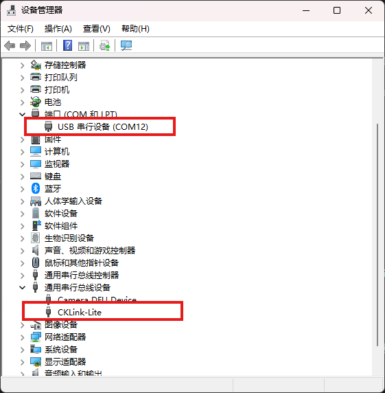

BL IOT SDK 开发指南
概述
BL702L/704L 系列芯片是博流智能科技有限公司开发的，基于 RISC-V 32-bit 处理器的通用微控制器，具有高达128M Hz的主频，极低的功耗，丰富的外设，同时支持 BLE 5.0、Zigbee 3.0 等功能，可被广泛应用于 IoT 和其他低功耗领域中。
BL IOT SDK 是博流团队专为 BL60X、BL70X 以及后续芯片提供的 IOT 软件开发包，包含了丰富的组件和示例，支持 Windows， Linux， macOS 操作系统, 可以帮助用户快速开发基于 BL 系列芯片的 IOT 应用。
本文以 Windows 操作系统为例，通过一个简单的示例展示如何搭建开发环境，编译代码，烧录固件以及查看输出，旨在帮助用户快速熟悉 BL70xL IOT 应用开发流程。更多平台和软件使用请参考 BL70xL 开发说明。
准备工作
在开始本示例前，必须具备的开发环境包括：
硬件
BL70xL_IOT_DVK V1.2 开发板
USB数据线
电脑 (Windows系统)
软件
MSYS2 (编译, 调试工具)
BLDevCube (固件烧写工具)
硬件连接
BL70xL_IOT_DVK V1.2 开发板集成了一颗 BL616 芯片，用于实现 USB-CDC(UART) 和 JTAG 的转换，用户无需外接其它转接板，调试器等硬件, 通过开发板上的 USB 接口就可实现对 BL70xL 芯片的软件烧录、串口通信、在线调试等全部功能。

BL70xL_IOT_DVK V1.2

USB接口示意图
{kind=link}
软件安装
在正式开始编译工程前，请先正确完成以下所有工具的安装，具体步骤以及环境变量设置如下:
重要
请您留意文档中，关于环境变量、驱动等信息的设置，这将避免后续操作的异常错误
1. 编译环境的建立
打开MSYS2并安装make，输入命令：
pacman -S make后回车，并根据提示直到安装完成
{kind=link}
2. 设置环境变量
使用gcc进行编译，需要在MSYS2中将gcc添加至环境变量，方法如下：
1.（推荐）在MSYS2的启动文件 home/xxx/.bash_profile 中添加如下指令：
export PATH=/yyy/zzz/toolchain/riscv/MSYS/bin:$PATH2.（不推荐，每次MSYS2重启需要重复该操作）在MSYS2命令行中，直接输入如下指令：
PATH=/yyy/zzz/toolchain/riscv/MSYS/bin:$PATH注：这里需要根据用户gcc所在实际路径替换上述yyy、zzz，例如
PATH=/d/Work/Code/bl_iot_sdk/toolchain/riscv/MSYS/bin:$PATH
编译工程
本部分介绍如何编译 customer_app 目录下的 bl702l_demo_event 工程。
打开MSYS2平台，进入本地 bl_iot_sdk/customer_app/bl702l_demo_ble_peripheral 文件夹
命令：
cd /c/bl_iot_sdk/customer_app/bl702l_demo_ble_peripheral/
执行脚本 genblem1s1p 开始编译工程
命令：
./genblem1s1p
编译完成后，当前目录新增
build_out文件夹以及以下文件：
bl702l_demo_ble_peripheral.bin： 二进制固件，用于烧录入芯片
bl702l_demo_ble_peripheral.elf： 可执行与链接文件，用于调试软件
bl702l_demo_ble_peripheral.map： 映射文件，用于函数以及内存占用等分析
Bouffalo Lab Parse Tool For Windows 是博流团队提供的 map 文件解析软件，可用于内存文件分析
{kind=link}
{kind=link}
烧录固件
本部分介绍如何使用 BLDevCube 集成开发工具将固件烧写入 BL702L/704L DVK 开发板。
1. 芯片进入烧写模式
1.1 使用
USB 数据线连接 BL702L/704L DVK 开发板以后
先按下开发板上的
Boot键，不要释放再按下开发板上的
RST键，并释放；此时芯片进入UART 烧写模式最后释放
Boot键
2. 使用 BLDevCube 下载固件
2.1 打开
BLDevCube.exe，在Chip的下拉框中选择BL702L/704L，点击Finish进入Dev Cube主界面
2.2 进入主界面后默认进入
IOT下载界面2.3 配置 BLDevCube
配置信息包括：
Interface：用于选择烧录的通信接口，这里选择 Uart 进行下载
Port/SN: 当选择 Uart 进行下载的时候，这里选择与芯片连接的 COM 端口号，可以点击下方 Refresh 按钮进行 COM 端口号的刷新
Uart Rate：当选择 Uart 进行下载的时候，填写波特率，默认 2000000 bps
Chip Erase: 选择下载前是否擦除整片 Flash，默认设置为不擦除
Xtal: 选择下载时的晶振频率，如果电路板没有焊接晶振则选择内部 RC32M
固件信息包括：
partition table：使用 Dev Cube 目录下对应芯片型号 partition 文件夹中的分区表，默认选择
...\chips\bl702l\partition\partition_cfg_1M.tomlfirmware：用户编译生成的 bin 文件路径
...\bl_iot_sdk\customer_app\bl702l_demo_ble_peripheral\build_out\bl702l_demo_ble_peripheral.bindts: 使用 Dev Cube 目录下对应芯片型号 device_tree 文件夹中的设备树，默认选择
...\chips\bl702l\device_tree\bl_factory_params_IoTKitA_32M.dts2.4 在正确完成上述配置后，点击
Create & Download按钮进行下载，下载成功后即可看到状态栏变成绿色
{kind=link}
{kind=link}
3. 运行固件
打开 PC 上安装的串口工具，选择 2000000 波特率
按下开发板上的
RST键程序正确执行，PC 端串口工具将看到如下打印
注解
烧录中如出现无法烧录、烧录失败、烧录成功以后无打印等异常，可查看 BL702常见问题汇总
{kind=link}
调试软件
本部分介绍使用板载的 CKLink 调试器 和T-HeadDebugServer, GDB 调试环境进行软件调试。
1. CKLink连接
CKLink 是 T-HEAD 开发的 RISC-V JTAG 调试器，BL70xL_IOT_DVK V1.2 开发板上集成一颗 BL616 芯片实现了 CKLink 功能。
BL70xL_IOT_DVK V1.2 开发板出厂状态， CKLink 已经连接到BL70xL JTAG接口， 当通过板上 USB 接口与电脑连接时，
设备管理器 -> 通用串行总线设备中出现一个名为CKLink-Lite的设备，表明CKLink连接成功。注解
不同系列 BL70xL 开发板集成的调试器和JTAG连接状态可能不同，使用前请务必确认JTAG接口是否正确连接。BL70xL_IOT_DVK V1.0 开发板，请参考 BL70xL_DVK_V1.0
{kind=link}
2. T-HeadDebugServer 安装和配置
T-HeadDebugServer 是 T-HEAD 推出的调试工具，用来配合GDB完成RISC-V CPU的在线调试。
2.1 从 T-HEAD 官网下载最新版本 T-HeadDebugServer
2.2 将下载的 T-HeadDebugServer 安装包解压，并双击 Setup，一路 next 即可，安装完成以后，桌面会有一个 T-HeadDebugServer 图标
2.3 点击
三角按钮，如果变成圆圈，则表示 JTAG 连接成功。如果失败，则需要检查 JTAG 线序是否正确。
3. GDB 调试
重要
bl702l_demo_ble_peripheral 为低功耗产品示例，进入低功耗模式下，JTAG连接自动断开。为演示调试过程，本例将示例代码 pds_app.c 中的
btble_pds_enable(1);修改为btble_pds_enable(0)；, 避免设备进入低功耗模式而断开JTAG连接。3.1 打开 MSYS2 终端，输入命令
riscv64-unknown-elf-gdb打开 GDB 调试环境
3.2 输入命令
file build_out/bl702l_demo_ble_peripheral.elf加载 elf 文件3.3 输入命令
target remote :1025连接 T-HeadDebugServer，其中1025是 T-HeadDebugServer 默认端口3.4 输入命令
hb bleapp_connected设置断点，然后输入命令c开始调试3.5 Master 扫描并连接该设备，GDB调试环境会自动断点到“bleapp_connected”函数；
输入命令
bt查看函数调用栈；输入命令
p <变量名>监视变量值；输入命令
c继续运行；输入命令
n单步调试；3.6 输入命令
quit退出 GDB 调试环境
{kind=link}
{kind=link}
{kind=link}
{kind=link}
{kind=link}
{kind=link}
其它说明
更多平台和软件使用请参考 BL70xL 开发说明。